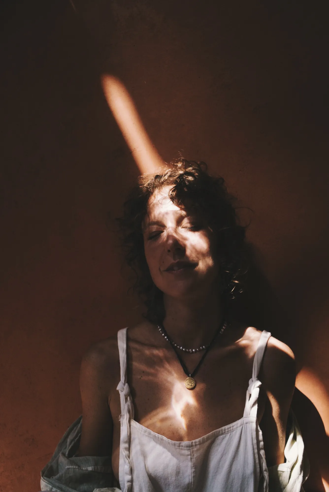

Writing
Letters, essays, and observations

Writing on authorship, identity, imagination, the creative process, and the strange experience of being human.
Personal stories, philosophical inquiries, and reflections from a life spent exploring what it means to make something of our existence.
01
Latest on Substack
-
The space before the story
On the meanings we make, the selves we defend, and letting something remain unfinished.
-
Letters From the Threshold
On the woman we are leaving, and what we owe her.
-
Letters from the Threshold
On Becoming a Mother
-
The forgotten place
Mexico City diary
-
Under the pouring rain
Mexico City Diary
-
Spiraling
On how to process undesirable thoughts
-
How Long Until You Worry?
Hide and seek
-
Letters from the threshold
The Old Forces Still Come for Us
-
Letters from the threshold
Postpartum as initiation
-
A Broken One, Not an Innocent One
Some notes on shadow journaling